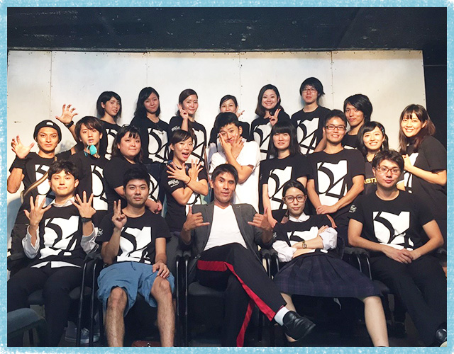

初演から3年。物語や演出を大幅リニューアルしての再上演です。ロックとポップスを中心に、ゴスペル、カントリー、アニソン等を加えた多彩なラインナップ。さらに今回の初ホール公演にあたり、個性豊かな客演を多数迎えました。
「何のために生きるのか 何のため息をするのか」将来への夢や希望、立ちはだかる現実。それでも歩み続ける人々の物語が、再び幕を開ける。
脚本/作詞/作曲：高安剛士演出：大見謝龍一編曲：大城清貴